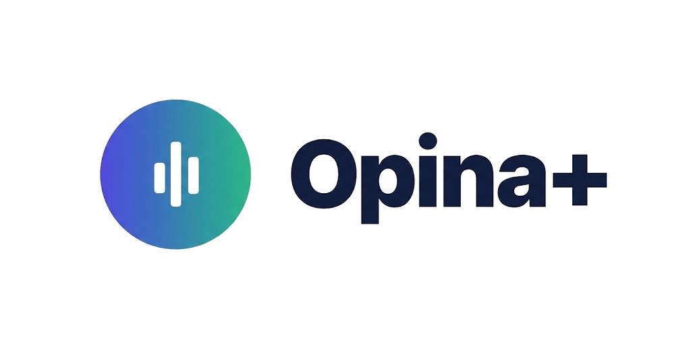

Abriendo Opina+ en tu navegador…
Así tu sesión te queda guardada para la próxima vez.
Entrar a Opina+ ¿No se abrió solo? Toca el botón. Si estás dentro de WhatsApp, también puedes usar «Abrir en Chrome».¿Con qué navegador abres Opina+?
Así tu sesión te queda guardada para la próxima vez.
Abrir en Safari Abrir en Chrome o seguir aquí